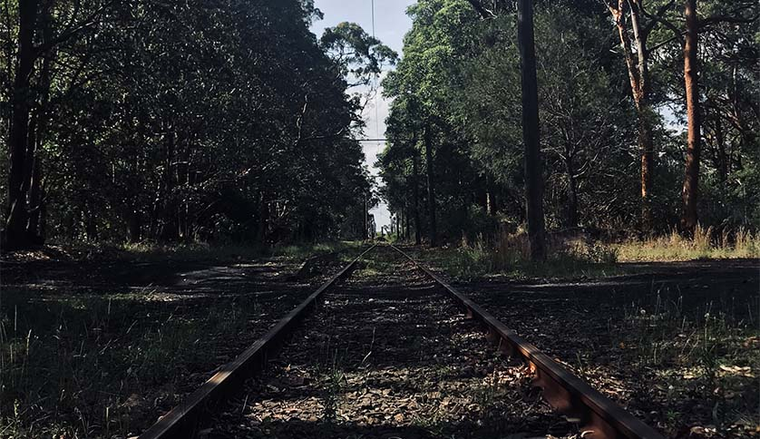

Travel Packages
Henry's Travel guides you through a variety of travel package products and at reasonable prices.
-
Sydney Full 6 Day
Sydney's one of the world's three most beautiful ports, Sydney's opera house and harbor bridge, blue eucalyptus forest blue mountains and the beautiful beaches of the South Pacific are unprecedented and full of conquests to enjoy everything in Sydney, Australia's largest city.
Price: $200

-
Luna Park 1 Day Tour / Night Tour Included
It is a beach amusement park. Despite its small size, many people are still looking for it, thanks to the stimulating atmosphere that excites memories and the historical significance that it has been in existence for many years. The amusement park tour package is the closest to Sydney City, where you can take a short train or ferry ride, making it a lighter tour.
Price: $100
-

National Park Camping 2 Day Tour
National parks are divided into nature conservation areas, natural environment areas, and collective facility areas. A natural conservation area is an area where all resources are primitively preserved and are well preserved without damage to animals and plants or natural monuments, which are of historical and academic value and need to be protected. As a high-value area as a tourist and recreation area, it is an area that can only accept facilities such as afforestation and landscaping, and our travel agency provides camping tools.
Price: $300
-

Blue Mountains
Tracking Tour
In the Blue Mountains, the main destination for tourists is Echo Point in Katoomba. It is a place where you can enjoy the panoramic view of Blue Mountain, as well as the unusual rocky mountain called Sejamaebong. At Eco Point, you can take a tram train running through a steep canyon with a maximum slope of 52 degrees to see deep into the canyon. We travel by cable car or the trekking course is romantic.
Price: $200